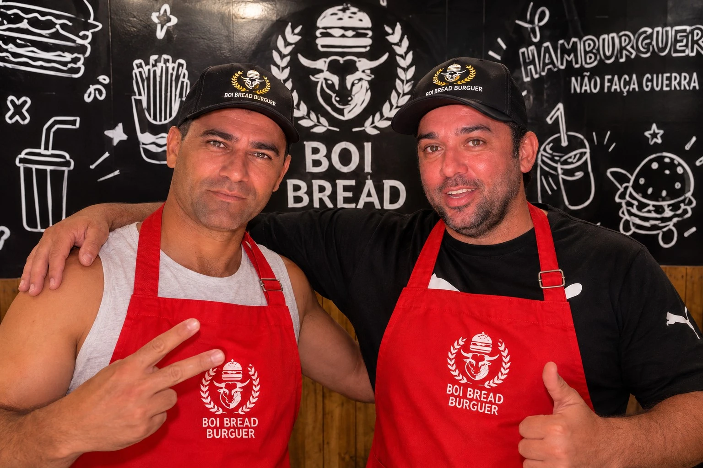

BOI BREAD · BOA VIAGEM, RECIFE
Seu próximo
burger favorito.
Hambúrgueres artesanais, do clássico ao smash.
Escolha o seu, combine com uma bebida e aproveite.

BOI BREAD BURGUERBOA VIAGEM · RECIFE
DESDE 2020
Foi em meio à pandemia
que tudo começou.
Em 2020, os amigos Luiz e Dudu se uniram para criar a Boi Bread. Com poucos recursos, deram os primeiros passos de uma hamburgueria artesanal em Boa Viagem, no Recife.
Do delivery à mesa, a casa foi conquistando novos clientes. Os quatro títulos no Festival Recife Love Burger fazem parte dessa trajetória.
4x campeõesFestival Recife Love Burger
CONHEÇA DE PERTO
Nossa casa, em Recife.
PLANEJE SUA VISITA
Horário de funcionamento
Domingo a quinta18h às 00h
Sexta e sábadoA confirmar
Confirme o horário de atendimento com a loja antes de visitar.
Falar com a Boi Bread ↗VENHA NOS CONHECER
Encontre a Boi Bread.
Rua Tenente Domingos de Brito, 1145Boa Viagem · Recife, PEComo chegar
ESCOLHA O SEU FAVORITO
Os clássicos da casa
Você ainda não salvou favoritos. Toque no coração de um produto para encontrá-lo aqui.